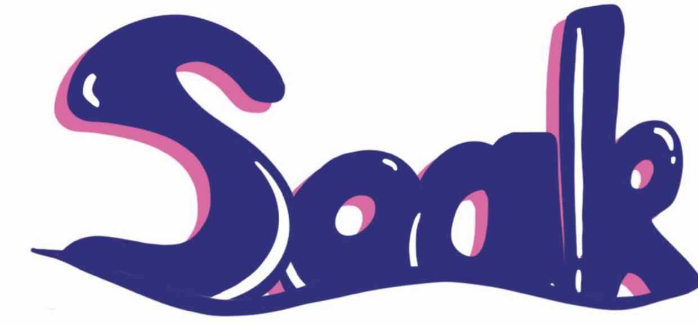
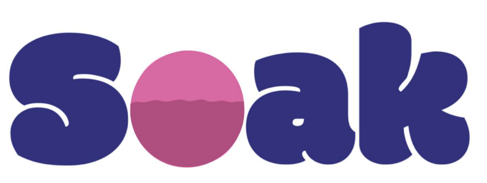
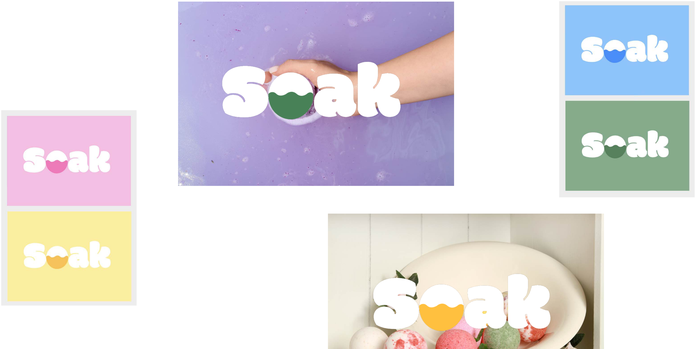
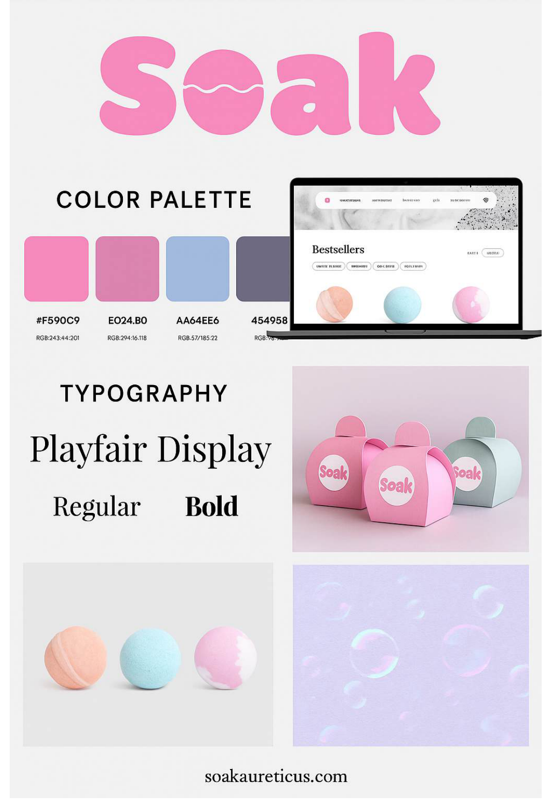
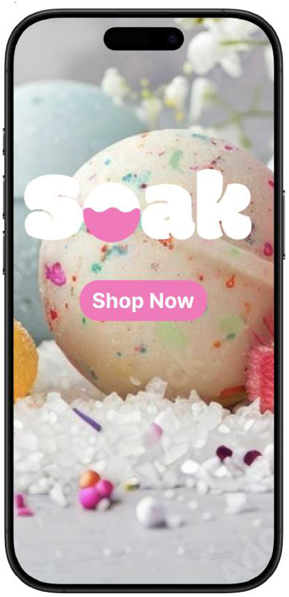

Bath bombs sell color, scent, and fizz — a pause that is supposed to feel personal, playful, and a little bit like a ritual.

A laptop has none of that. Most bath shops online look like catalogs, and checkout is homework for a twelve-dollar impulse.
Photography as the interface, a mark you can actually read, and a shopping path that does not make you fill out your life story to buy soap.
The problem
Build a storefront that could sell a sensory product through a screen. Bath bombs are color, scent, and fizz — none of which a laptop has. If the chrome gets louder than the water, the brand collapses into a generic shop template.
We were Pink Team in IU’s Visual Design for the Web: LeeLoo Craig, Sakshi Khilari, Nicholas Swartz, Lilly Yott, and me. The brief was a complete identity and a hi-fi shopping experience, not a live shop. Soak had to feel inclusive and nature-powered without pretending we had a warehouse.
The audience we designed for was young adults — Millennials and Gen Z who care about ingredients and sustainability — with teenagers and gift shoppers as a second ring. The brand promise we kept coming back to: self-care that feels personal, purposeful, and playful, without asking people to compromise the planet or their values.
The brand
Soak’s story is that a bath bomb can be more than fizz: a small window of mindfulness, joy, and self-discovery. Sustainability and clean ingredients were not a footer badge. They were why someone would trust a new name with their skin. The three values we put on the board were sustainability, fun, and accessible — in that order, because fun without access is just a pretty bottle.
-
01
Sustainability
Clean ingredients and a lighter footprint had to show up in copy, packaging, and the way product pages talk about what is in the bomb — not only in a values slide.
-
02
Fun
Playful is the product. If the identity gets too precious, you have lost the fizz. If it gets too loud, you have lost the pause.
-
03
Accessible
Price, language, and who is in the photography. Soak is for a 16-year-old in a drugstore aisle as much as it is for a 25-year-old who shops Sephora.
Who it had to serve
We wrote three people and designed against all of them at once. Logan needed something under $15 that did not sting and did not feel like it was only for women. Jessica would spend, but only if the packaging photographed well and the ingredients did not feel like a dare. Tasha would buy at 11 p.m. if it was low-effort, actually worked, and did not add cleanup to a day that already had enough of it.
-
16 · oily / sensitive
Logan
Skincare newbie. Shops Target, CVS, Amazon. Hates confusing names, long routines, and aisles that make him feel like he walked into the wrong store.
-
25 · sensitive
Jessica
Trend-driven, $200+ a month, drawn to photogenic packaging. Will bounce if the hype is ahead of the formula — or if a limited drop is already gone.
-
35 · dry
Tasha
Single mom, shops late. Trusts real parents over polished influencers. Self-care only wins if it is quick, low-cleanup, and does not feel like another job.
The shopping journey
Before screens, we mapped how someone actually arrives at a bath bomb: TikTok or Instagram, a cautious pass through ingredients and reviews, a slightly anxious checkout, then the unboxing they might post. The site only owns the middle. If consideration feels like a catalog and decision feels like a form, retention never happens.
-
Awareness
Intrigued, a little skeptical
Scrolls TikTok or Instagram. Watches a demo. Notices the clean-and-affordable promise before they notice a nav bar.
-
Consideration
Cautious, still interested
Clicks through. Checks ingredients, sustainability, price, reviews. This is where photography and scent copy have to do the work a shelf would.
-
Decision
Excited, slightly anxious
Adds to cart, maybe a code, pays. Every extra field is a reason to abandon a low-cost impulse. Trust still has to survive the short path.
-
Retention
Satisfied, relaxed
The bomb, the packaging, the follow-up. If the bath is good they tell a friend — or they post it, which is how the next Logan finds us.
Finding the mark
The version people voted for first was a graffiti Soak — navy, pink shadow, a wave under the letters. It had energy. It was also hard to read, and too casual for a mid-luxury bath product. The second pass switched to a bubbly, legible wordmark and dropped a waterline into the O: the letter became a bowl of liquid.
The final mark keeps that O. Color in the bowl shifts with the photo — green over lavender water, yellow over bath bombs on a shelf — so the logo behaves like a product, not a stamp. Fun stayed. The guesswork left.



The brand board locked the rest: pink #F590C9, muted rose, periwinkle #A6B4E6, charcoal #454958, and Playfair Display on packaging and product type. Photography stayed soft — bubbles, bombs, a bestsellers laptop — so the site did not have to invent a mood the photos had already set.

What I owned
I mapped the shopping and checkout journey so discovery, product, and pay felt like one path instead of four pages that happened to share a logo. I contributed to the mark, color, and how the brand should sit on packaging and screen. I built high-fidelity frames and ran usability sessions on findability and checkout length.
This was a visual-design collaboration, not a set of solo epics. LeeLoo, Sakshi, Nicholas, and Lilly were in the identity, the photography, and the screens with me. I was the person holding the journey map next to the prototype so a pretty home page still had a way through to pay.
The product
The homepage is a photograph with a brand on it. A floating pill carries new releases, a sale, bestsellers, gifts, and a shop finder. The wordmark sits in the water. Under it, one quiet action: shop by skin type — a door for Logan, Jessica, and Tasha without making any of them fill out a quiz first.

The mobile frame keeps the same idea and adds the thing the desktop hero was missing: a real Shop Now. Same bubbly mark, same photography-as-interface, less chance a first-time visitor only admires bubbles.

Design decisions
-
01
Let the photo carry mood.
UI stays thin on purpose. If the chrome gets louder than the water, the brand collapses into a generic shop template.
-
02
Product cards should smell like something.
Hover states and scent copy are not decoration here — they are the substitute for picking a bomb up in a store. Consideration lives or dies on that substitute.
-
03
Shorten checkout.
Every extra field is a reason to abandon a low-cost impulse. We cut input until the path felt slightly too easy, then checked that it still felt trustworthy.
-
04
Shop by skin type, not by vibe alone.
The three personas disagree on budget and aisle. They agree they have skin. That CTA is how a 16-year-old and a 35-year-old can share a homepage without being marketed as the same person.
How we got there
We did not start in Figma. We started with a story, three values, and a map of how someone would even hear the name. Personas and the journey came before the graffiti mark. The mark got a second chance when “most popular” turned out to mean “hard to read.” Website and app frames came last, then usability on whether you could find a product and get out of checkout without a lecture.
-
Story
Frame
Mission, values, audience. Inclusive, nature-powered bathing that still feels like a treat.
-
People
Map
Logan, Jessica, Tasha. Awareness through retention, with checkout as the anxious middle.
-
Mark
Revise
Voted-for graffiti, then a readable wordmark with a waterline. Colorways on real bath photos.
-
Shop
Prototype
Hi-fi web and app. Usability on findability and checkout length. Atmosphere with a door.
What we made
A complete fictional brand and a hi-fi storefront: identity system, packaging direction, a desktop home that treats photography as the UI, and a phone frame with a Shop Now you cannot miss. There is no live shop — and there should not be. The Figma prototype is the product we shipped for class.
- Team
- 5 people, Pink Team
- People
- 3 personas, 4 journey stages
- Identity
- Mark, palette, type, packaging
- Output
- Hi-fi web + app in Figma
What I learned
The floating nav is elegant and a little too light. In a later pass I would darken the link gray and put a real primary CTA on the desktop hero — “Shop the bath” — so first-time visitors are not left admiring bubbles. Visual design class taught me atmosphere. UX work is making sure atmosphere still has a door. The app frame already learned that lesson; the homepage still owes it one.
The other lesson was the first logo. Popular is not the same as usable. A mark that looks like water does not help if you cannot tell it says Soak. Putting the waterline inside a letter we could actually read was the design decision that let the rest of the system hold.